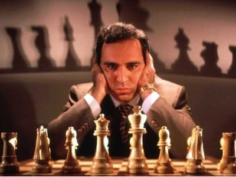
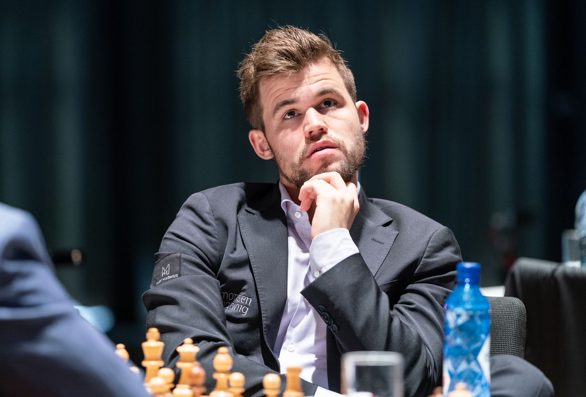
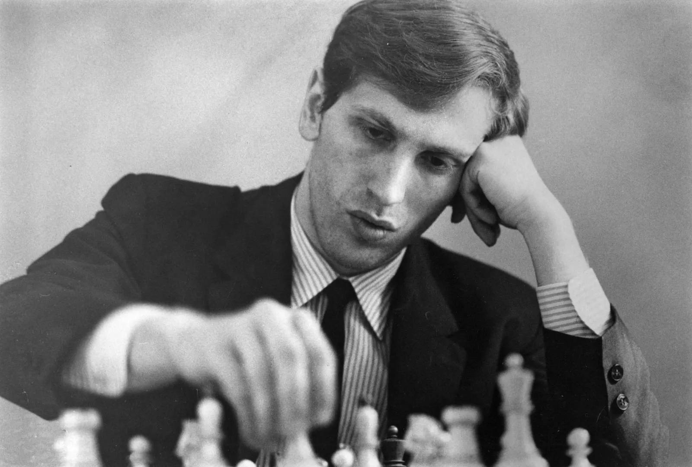
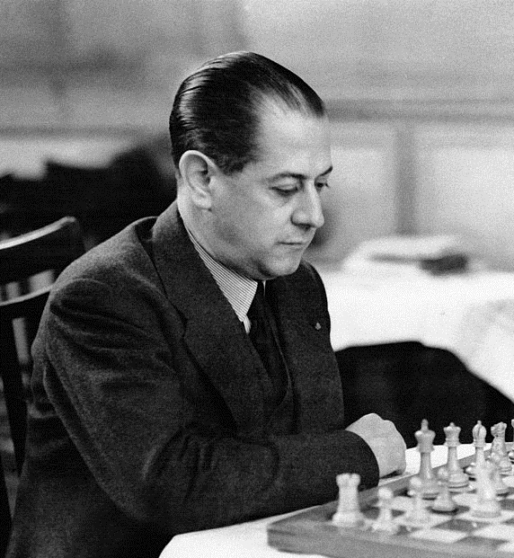
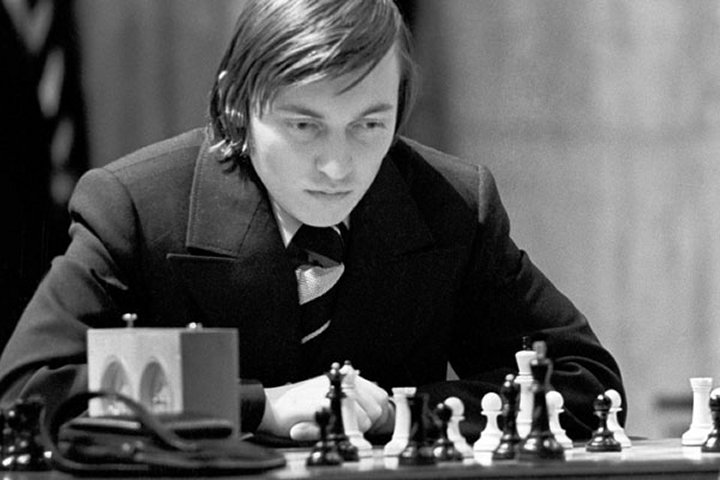

Best Polish Player

Jan-Krzysztof Duda born 26 April 1998 is a Polish chess grandmaster. A prodigy, he achieved the grandmaster title in 2013 at the age of 15 years and 21 days. As of November 2022, he is ranked No. 1 in Poland and No. 18 in the world. His personal best rating of 2760 makes him the highest ranked Polish player of all time. Duda won the Polish Championship in 2018 and the Chess World Cup in 2021. He is a bronze medallist at the European Team Chess Championship in 2021 and he also competed in the Candidates Tournament 2022 finishing seventh. He was awarded the Golden Cross of Merit for his achievements in chess.
Top 5 Best players in history
Number 1

Garry Kimovich Kasparov (born 13 April 1963) is a Russian chess grandmaster, former World Chess Champion, writer, political activist and commentator. His peak rating of 2851, achieved in 1999, was the highest recorded until being surpassed by Magnus Carlsen in 2013. From 1984 until his retirement in 2005, Kasparov was ranked world No. 1 for a record 255 months overall for his career, the most in history. Kasparov also holds records for the most consecutive professional tournament victories and Chess Oscars . Kasparov became the youngest ever undisputed World Chess Champion in 1985 at age 22 by defeating then-champion Anatoly Karpov.He held the official FIDE world title until 1993, when a dispute with FIDE led him to set up a rival organization, the Professional Chess Association. In 1997 he became the first world champion to lose a match to a computer under standard time controls when he lost to the IBM supercomputer Deep Blue in a highly publicized match. He continued to hold the "Classical" World Chess Championship until his defeat by Vladimir Kramnik in 2000. Despite losing the title, he continued winning tournaments and was the world's highest-rated player when he retired from professional chess in 2005.
Number 2

GSven Magnus Carlsen (born 30 November 1990) is a Norwegian chess grandmaster who is the reigning five-time World Chess Champion. He is also a three-time World Rapid Chess Champion and five-time World Blitz Chess Champion. Carlsen has held the No. 1 position in the FIDE world chess rankings since 1 July 2011 and trails only Garry Kasparov in time spent as the highest-rated player in the world. His peak rating of 2882 is the highest in history. He also holds the record for the longest unbeaten streak at the elite level in classical chess. A chess prodigy, Carlsen finished first in the C group of the Corus chess tournament shortly after he turned 13 and earned the title of grandmaster a few months later. At 15, he won the Norwegian Chess Championship, and at 17 he finished joint first in the top group of Corus. He surpassed a rating of 2800 at 18, the youngest at the time to do so. In 2010, at 19, he reached No. 1 in the FIDE world rankings, the youngest person ever to do so. Carlsen became World Chess Champion in 2013 by defeating Viswanathan Anand. He retained his title against Anand the following year and won both the 2014 World Rapid Championship and World Blitz Championship, becoming the first player to hold all three titles simultaneously, a feat which he repeated in 2019. He defended his classical world title against Sergey Karjakin in 2016, against Fabiano Caruana in 2018, and against Ian Nepomniachtchi in 2021. Carlsen will not defend his title against Nepomniachtchi in 2023.
Number 3

Robert James Fischer (March 9, 1943 – January 17, 2008) was an American chess grandmaster and the eleventh World Chess Champion. A chess prodigy, he won his first of a record eight US Championships at the age of 14. In 1964, he won with an 11–0 score, the only perfect score in the history of the tournament. Qualifying for the 1972 World Championship, Fischer swept matches with Mark Taimanov and Bent Larsen by 6–0 scores. After another qualifying match against Tigran Petrosian, Fischer won the title match against Boris Spassky of the USSR, in Reykjavík, Iceland. Publicized as a Cold War confrontation between the US and USSR, the match attracted more worldwide interest than any chess championship before or since. In 1975, Fischer refused to defend his title when an agreement could not be reached with FIDE, chess's international governing body, over the match conditions. Consequently, the Soviet challenger Anatoly Karpov was named World Champion by default. Fischer subsequently disappeared from the public eye, though occasional reports of erratic behavior emerged. In 1992, he reemerged to win an unofficial rematch against Spassky. It was held in Yugoslavia, which was under a United Nations embargo at the time. His participation led to a conflict with the US government, which warned Fischer that his participation in the match would violate an executive order imposing US sanctions on Yugoslavia. The US government ultimately issued a warrant for his arrest. After that, Fischer lived as an émigré. In 2004, he was arrested in Japan and held for several months for using a passport that the US government had revoked. Eventually, he was granted Icelandic citizenship by a special act of the Icelandic parliament, allowing him to live there until his death in 2008.
Number 4

José Raúl Capablanca (19 November 1888 – 8 March 1942) was a Cuban chess player who was world chess champion from 1921 to 1927. A chess prodigy, he is widely renowned for his exceptional endgame skill and speed of play. Capablanca was born in 1888 in Havana. He beat Cuban champion Juan Corzo in a match on 17 November 1901, two days before his 13th birthday. His victory over Frank Marshall in a 1909 match earned him an invitation to the 1911 San Sebastian tournament, which he won ahead of players such as Akiba Rubinstein, Aron Nimzowitsch and Siegbert Tarrasch. Over the next several years, Capablanca had a strong series of tournament results. After several unsuccessful attempts to arrange a match with then world champion Emanuel Lasker, Capablanca finally won the world chess champion title from Lasker in 1921. Capablanca was undefeated from 10 February 1916 to 21 March 1924, a period that included the world championship match with Lasker. Capablanca lost the title in 1927 to Alexander Alekhine, who had never beaten Capablanca before the match. Following unsuccessful attempts to arrange a rematch over many years, relations between them became bitter. Capablanca continued his excellent tournament results in this period but withdrew from serious chess in 1931. He made a comeback in 1934, with good results, but also showed symptoms of high blood pressure. He died in 1942 of a brain hemorrhage.
Number 5

Anatoly Yevgenyevich Karpov ( born May 23, 1951) is a Russian and former Soviet chess grandmaster, former World Chess Champion, and politician. He was the 12th World Chess Champion from 1975 to 1985, a three-time FIDE World Champion (1993, 1996, 1998), twice World Chess champion as a member of the USSR team (1985, 1989), and a six-time winner of Chess Olympiads as a member of the USSR team (1972, 1974, 1980, 1982, 1986, 1988). The International Association of Chess Press awarded him nine Chess Oscars (1973, 1974, 1975, 1976, 1977, 1979, 1980, 1981, 1984). Karpov's chess tournament successes include over 160 first-place finishes.He had a peak Elo rating of 2780, and his 102 total months at world number one is the third-longest of all time, behind Magnus Carlsen and Garry Kasparov, since the inception of the FIDE ranking list in 1970. Karpov is also an elected Member of the State Duma in Russia. Since 2006, he has chaired the Commission for Ecological Safety and Environmental Protection of the Civic Chamber of the Russian Federation, and since 2007, he has been a member of the Public Council under the Ministry of Defence.